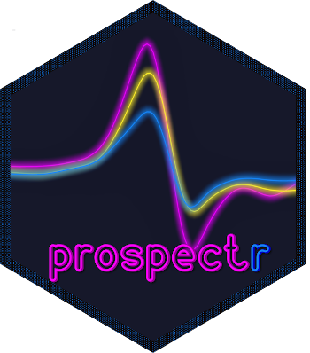

Functions for Chemometric Processing and Sample Selection of Spectroscopic Data

Last update: 2026-05-31
Version: 0.2.9 – proxy
In science, one man’s noise is another man’s signal
About
prospectr provides tools for signal processing and chemometrics, with a focus on pre-processing and sample selection of spectral data. It is increasingly used in spectroscopic applications, as reflected by the growing number of scientific publications citing the package.
Although similar functions are available in other packages such as signal, many functions in prospectr are designed to work consistently with data.frame, matrix, and vector inputs. Several functions are optimised for speed and rely on C++ code through the Rcpp and RcppArmadillo packages.
Documentation
The package includes three vignettes covering all major functionality:
-
An introduction to the
prospectrpackage: Overview, installation, and how to cite the package. - Signal processing: Pre-processing methods including smoothing, derivatives, scatter corrections, baseline removal, centering, scaling, resampling, and continuum removal.
- Selecting representative calibration samples: Algorithms for selecting representative calibration and validation subsets from spectral data.
Core functionality
Signal processing:
-
movav(): moving average filter -
savitzkyGolay(): Savitzky-Golay smoothing and derivatives -
gapDer(): gap-segment derivative -
baseline(): baseline removal -
continuumRemoval(): continuum-removed reflectance or absorbance -
detrend(): SNV-Detrend normalisation -
standardNormalVariate(): Standard Normal Variate (SNV) transformation -
msc(): Multiplicative Scatter Correction -
binning(): average a signal in column bins -
resample(): resample a signal to new band positions -
resample2(): resample a signal using FWHM values -
blockScale(): block scaling -
blockNorm(): sum of squares block weighting
Calibration sampling:
-
naes(): k-means sampling -
kenStone(): Kennard-Stone (CADEX) algorithm -
duplex(): DUPLEX algorithm -
shenkWest(): SELECT algorithm -
puchwein(): Puchwein sampling -
honigs(): sample selection by spectral subtraction
Other utilities:
-
read_nircal(): read binary files from BUCHI NIRCal software -
readASD(): read binary or ASCII files from ASD instruments -
spliceCorrection(): correct for detector splice steps in ASD FieldSpec Pro -
cochranTest(): detect replicate outliers with the Cochran C test
Installation
Install from CRAN:
install.packages("prospectr")Or install the development version from GitHub:
# install.packages("remotes")
remotes::install_github("l-ramirez-lopez/prospectr")The package requires a C++ compiler. On Windows, install Rtools. On macOS, you may need to install gfortran and clang from CRAN tools.
Citing the package
citation(package = "prospectr")Contributing
Contributions are welcome! Please read our Contributing Guidelines (available in the GitHub repo) before submitting pull requests.
This project follows a Code of Conduct available in the GitHub repo.
Bug reports
Report issues at GitHub or contact the maintainer (ramirez.lopez.leo@gmail.com).
Related packages
-
resemble: Memory-based learning and local modelling for spectral chemometrics.